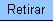
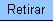

Ela deve ser acionada a partir do menu do sistema: "Faturamento --> Leituras e Consumo --> Informar Situação Especial de Faturamento".
Você terá duas opções para selecionar o(s) imóvel(eis):
- 1ª Opção: Selecionar um imóvel
- Neste caso, você deverá informar a matrícula do imóvel, ou selecioná-lo a partir da opção "Pesquisar Imóvel".
- 2ª Opção: Selecionar um conjunto de imóveis
- Neste caso, você deverá informar um intervalo de inscrição de inscrição de imóveis.
- A inscrição do imóvel é composta pelas seguintes informações: Localidade, Setor Comercial, Quadra, Lote e Sublote
- Ao informar a inscrição inicial, o sistema replicará a informação na inscrição final.
- Ao limpar um campo da inscrição inicial, o correspondente da final, assim como, os campos que ficam abaixo serão limpos.
- Ao alterar um campo da inscrição final para um valor maior que o da inicial, o sistema limpará os campos das inscrições inicial e final que ficam abaixo do campo alterado.
 para que o sistema
selecione os
imóveis, de acordo com os parâmetros informados.
para que o sistema
selecione os
imóveis, de acordo com os parâmetros informados.  e/ou , de
acordo com a situação do imóvel, ou do
conjunto de imóveis selecionado(s), em
relação à
situação especial de cobrança, para
que você ative a opção desejada.
e/ou , de
acordo com a situação do imóvel, ou do
conjunto de imóveis selecionado(s), em
relação à
situação especial de cobrança, para
que você ative a opção desejada.
 .
.